Introduction to Organic Chemistry 2
Topic 11.1–11.3 · Introduction to Organic Chemistry Part 2
On this page
Isomerism
Isomers are compounds with the same molecular formula but different arrangements of atoms. Because the arrangement is different, isomers usually have different physical properties and often different chemical properties.
There are two main kinds, and 9476 divides them like this:
| Kind | What differs | Types in 9476 |
|---|---|---|
| Constitutional (structural) isomers | The order in which the atoms are joined | chain, position, functional group |
| Stereoisomers | Only the arrangement of the atoms in space; the atoms are joined in the same order | cis-trans isomers; enantiomers |
Constitutional (structural) isomers
Constitutional isomers differ in the order in which the atoms are joined together. There are three types: chain, position and functional group isomers.
Chain isomers
Chain isomers differ in the arrangement of the carbon chain.
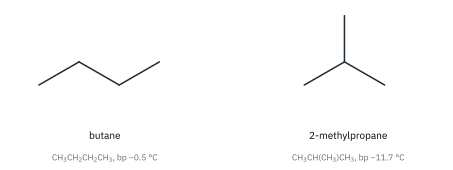
Branching in 2-methylpropane makes the molecule more compact. It has a smaller surface area of contact with its neighbours, so the instantaneous dipole-induced dipole (id-id) interactions between molecules are weaker, and its boiling point is lower.1
Position isomers
Position isomers differ in the position of a particular atom or group of atoms on the same carbon chain or ring.
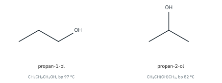
Functional group isomers
Functional group isomers have different functional groups.
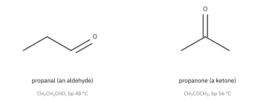
Note that aldehydes and ketones also differ significantly in their chemical properties: for example, propanal is easily oxidised to propanoic acid, but propanone is not oxidised under the same conditions (Topic 11.7). Other common pairs of functional group isomers are alcohols and ethers (ethanol and methoxymethane, C2H6O) and carboxylic acids and esters (propanoic acid and methyl ethanoate, C3H6O2).
Stereoisomers
Stereoisomers have the same atoms bonded together in the same order; they differ only in the spatial arrangement of the atoms or groups. 9476 has two types: cis-trans isomers and enantiomers (optical isomers).
Cis-trans isomerism
Cis-trans isomers differ in the arrangement of groups attached to the two carbon atoms of a C=C double bond. In the cis isomer, two identical (or similar) groups are on the same side of the double bond; in the trans isomer, they are on opposite sides.2
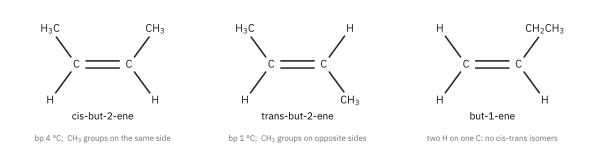
Why cis-trans isomers exist: restricted rotation
Recall from Part 1 that a C=C bond is one σ bond and one π bond, and that the π bond needs the two p orbitals to be parallel so that they can overlap sideways. To turn one end of the double bond relative to the other, the p orbitals would have to twist apart. At 90° they no longer overlap at all, so the π bond would have to break (about 260 kJ mol−1, Part 1). There is not enough energy for this at room temperature, so there is no free rotation about a C=C bond. The cis and trans forms cannot turn into each other, and they are different compounds.
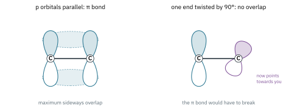
Properties of cis-trans isomers
Cis-trans isomers have the same functional groups, so their chemical reactions are usually similar, but their shapes differ, so their physical properties differ. Butenedioic acid is a striking example.
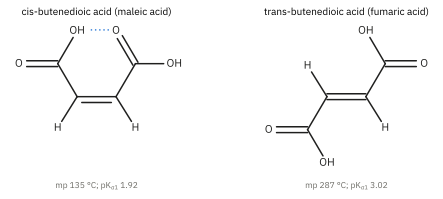
- In the cis isomer (maleic acid) the two –COOH groups are close enough to form a hydrogen bond within the molecule. This leaves fewer –OH groups free to hydrogen bond to other molecules, and the bent molecules pack less well in the crystal, so its melting point is much lower (135 °C) than that of the trans isomer (fumaric acid, 287 °C).
- Maleic acid is the stronger acid (lower pKa1; Topic 10): its anion is stabilised by the same intramolecular hydrogen bond.
- Only the cis isomer loses water on heating to form a cyclic anhydride, because only in the cis isomer are the two –COOH groups close enough to react with each other.
Enantiomerism
Some molecules are not superimposable on their own mirror image, in the same way that your left hand is not superimposable on your right. Such molecules are called chiral (from the Greek for hand). A chiral molecule and its mirror image are a pair of enantiomers (optical isomers): non-superimposable mirror images of each other.
The chiral centre
The most common source of chirality is a chiral centre: a carbon atom with four different atoms or groups attached to it. It is marked * in structures. Butan-2-ol has a chiral centre: C2 carries –H, –OH, –CH3 and –CH2CH3.
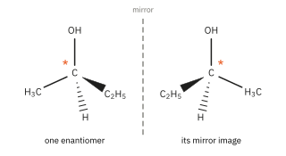
Although they share the same formula, the two enantiomers are not interchangeable any more than a left-hand glove is interchangeable with a right-hand glove.
Deciding whether a molecule is chiral
A molecule with a plane of symmetry is superimposable on its mirror image, so it is not chiral (it is achiral). Use both tests:
- Look for chiral centres. A carbon with two identical groups (for example two H atoms, or two CH3 groups) cannot be a chiral centre. A molecule with one chiral centre is always chiral.
- Look for a plane of symmetry. If a molecule has two or more chiral centres, check whether it has a plane of symmetry. If it does, it is not chiral, even though it has chiral centres.
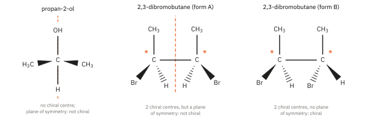
Optical activity
Ordinary light vibrates in all planes at right angles to its direction of travel. After it passes through a polarising filter it vibrates in one plane only: it is plane-polarised light. When plane-polarised light passes through a sample containing one enantiomer of a chiral compound, the plane of polarisation is rotated. Such a sample is optically active. The angle of rotation, α, is measured with a polarimeter.
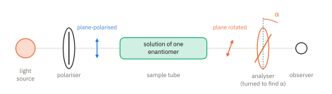
Both enantiomers rotate the plane of polarisation, and they both rotate it by the same angle, but one rotates it clockwise (+, dextrorotatory) and the other anticlockwise (−, laevorotatory). A mixture that contains both enantiomers in equal amounts shows no optical activity, because the effect of one cancels the effect of the other. Such a mixture is called a racemic mixture (a racemate). An achiral compound does not rotate plane-polarised light at all.
Properties of enantiomers
| Property | Enantiomers |
|---|---|
| Physical properties (melting point, boiling point, density, solubility, spectra) | Identical, except the direction in which they rotate plane-polarised light |
| Chemical properties with achiral reagents (H+, OH−, Br2, Na …) | Identical: same reactions at the same rate |
| Interactions with other chiral molecules (enzymes, receptors, chiral reagents) | Different: the two enantiomers fit a chiral partner differently |
A hand fits a glove of the same handedness only. In the same way, a chiral molecule interacts differently with the two enantiomers of another chiral molecule. Enzymes and receptors in the body are made of chiral amino acids, so they usually recognise only one enantiomer.3
Amino acids
Alanine (2-aminopropanoic acid) has a chiral centre: the central carbon carries –H, –CH3, –NH2 and –COOH. Glycine (aminoethanoic acid) has two H atoms on its central carbon, so it is not chiral. The two enantiomers of alanine are labelled L and D: the L form is the one found in proteins. (L and D, and the R and S labels used below for carvone and salbutamol, are two ways of naming the arrangement at a chiral centre; see the Enrichment box at the end of this Part.)
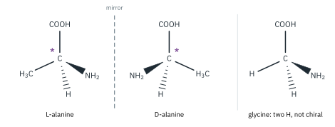
19 of the 20 amino acids used to make proteins can exist as L- or D- enantiomers. The exception is glycine, which does not have a chiral centre. L amino acids are used for protein synthesis by all life on our planet. D amino acids are rare in nature. (Some D amino acids are made by bacteria.)
Does it really matter? Yes.
- The function of a protein is determined by its shape.
- A protein with a D amino acid instead of an L one would have that side chain (R group) sticking out in the wrong direction.
Stereoisomers and biological activity
Many other kinds of organic molecules exist as enantiomers. Usually only one form is active in biological systems. For example, if one form binds to a receptor protein on the surface of a cell, the other probably cannot. So different stereoisomers can have quite different biological properties:
- Smell. (R)-carvone smells of spearmint; its enantiomer, (S)-carvone, smells of caraway. Our smell receptors are chiral.
- Drug action. The asthma drug salbutamol has been sold as a racemic mixture. Only the (R) enantiomer, levosalbutamol (Fig 11), relaxes the airways effectively; the (S) enantiomer is much less active and may be responsible for some of the side effects. The pure (R) enantiomer is now also available as a medicine.
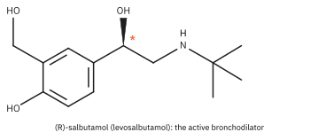
With their protein catalysts, or enzymes, cells usually make only one enantiomer. However, a laboratory or factory synthesis from achiral starting materials usually produces equal amounts of the two enantiomers: a racemic mixture. Making one enantiomer selectively is called asymmetric synthesis.
Isomers from a molecular formula
To find all the isomers of a molecular formula, work systematically: first the constitutional isomers (straight chain, then branched; then move the functional group; then other functional groups or rings), then check each one for cis-trans isomerism and for chiral centres.
Worked example 1: C4H8. C4H8 has one C=C bond or one ring. The straight-chain alkenes are but-1-ene and but-2-ene; the branched alkene is 2-methylpropene. Of these, only but-2-ene has two different groups on each alkene carbon, so it exists as cis and trans isomers. The rings are cyclobutane and methylcyclopropane. Total: 6 isomers (Fig 12).
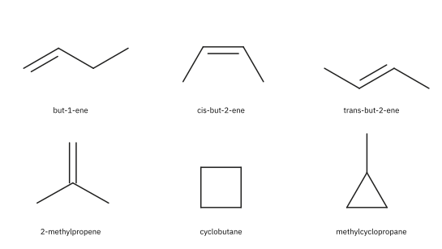
Worked example 2: C4H9Br. There are four constitutional isomers (Fig 13). Only 2-bromobutane has a chiral centre (C2 carries H, Br, CH3 and C2H5), so it exists as a pair of enantiomers. Total: 5 isomers. These four halogenoalkanes appear again in Part 3, where primary, secondary and tertiary halogenoalkanes react by different mechanisms.
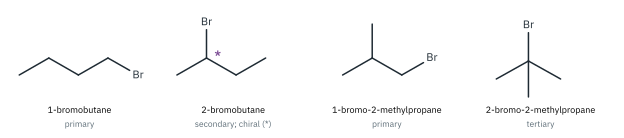
Worked example 3: identifying stereoisomerism in a structural formula. How many stereoisomers does pent-3-en-2-ol, CH3CH=CHCH(OH)CH3, have? C2 carries H, OH, CH3 and CH=CHCH3: four different groups, so C2 is a chiral centre. C3 carries H and CH(OH)CH3; C4 carries H and CH3: each carbon of the C=C has two different groups, so there is cis-trans isomerism. Each of the cis and trans forms has a chiral centre, so there are 2 × 2 = 4 stereoisomers.
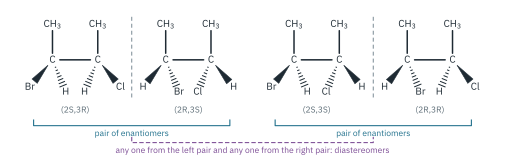
Additional information
- Boiling points: butane −0.5 °C, 2-methylpropane −11.7 °C; propan-1-ol 97 °C, propan-2-ol 82 °C; propanal 48 °C, propanone 56 °C (literature values). Branching usually lowers the boiling point. Its effect on melting point is less predictable, because melting also depends on how well the molecules pack in the solid. ↩
- Rings also restrict rotation, so a disubstituted ring can have cis and trans forms (for example cis- and trans-1,2-dimethylcyclohexane). 9476 only asks about cis-trans isomerism in alkenes. The E/Z naming system is not required. ↩
- This is why enantiomers can be separated by chiral HPLC, and why enzymes can make a single enantiomer: in each case a chiral molecule (the column packing, the enzyme) tells the two enantiomers apart. ↩